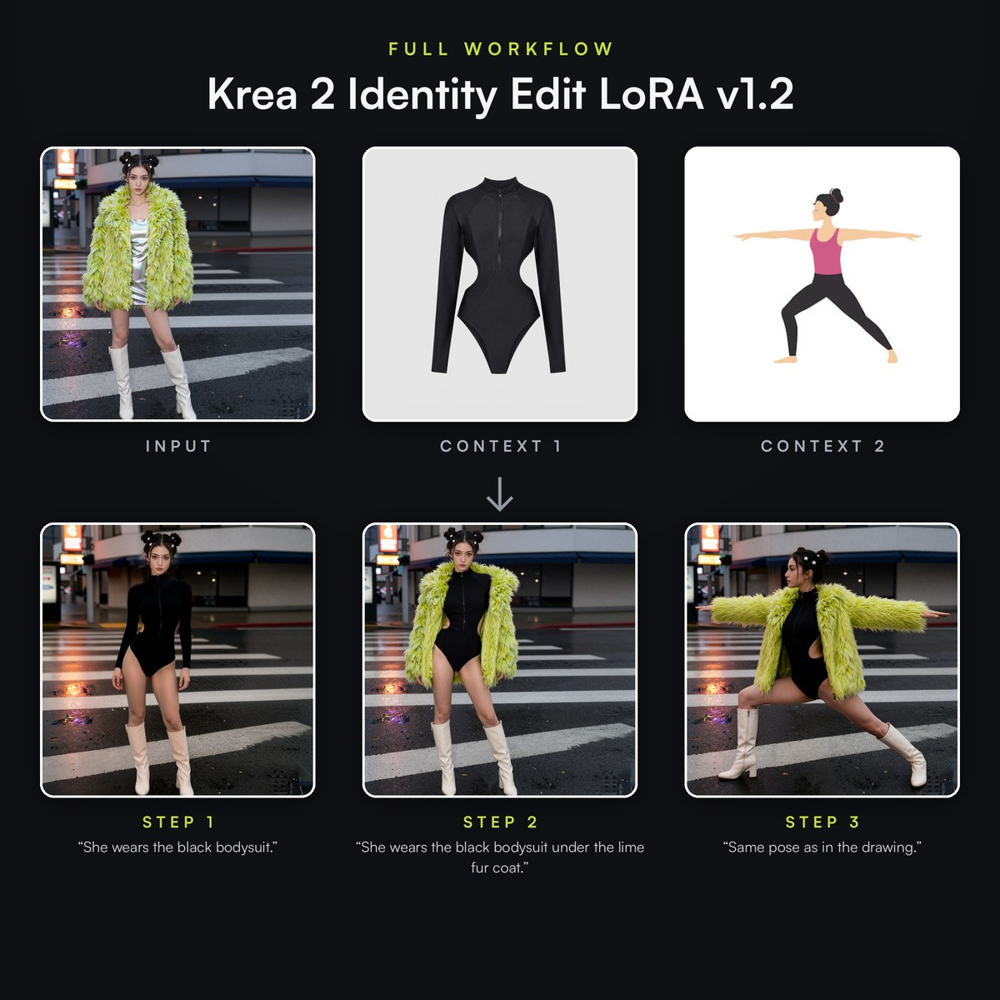

| ||||
|
September 2026 MiniMax H3 | ||||
|
MiniMax H3 showcase · 768p · Native sound. Watch with sound → | ||||
|
Since launching in July, Sogni Unlimited has gathered momentum through August and into September. Thank you to the creators exploring what it can do, and the independent GPU operators making those ideas possible. There is a lot to catch up on since our last issue. The biggest picture: your plan now puts more of a complete creative studio within reach, from sharper H3 video to your own LoRAs, character voices and 3D assets. And 51% of net subscription revenue is reserved for participating GPU operators. | ||||
|
The headline · 2K Beta · Included in Unlimited The second stage changes the picture.MiniMax H3’s open-weight release arrived without the second stage behind MiniMax’s hosted high-resolution output. The community built its own approach. We’ve built on that work and optimized it for the Sogni Supernet, bringing H3 to stunning 2K with dialogue and sound intact.
The second pass enlarges and refines the video before it becomes the finished picture. Look at the wood grain, lettering and fabric in the 2K coffee-bar demos. Credit to LBH-123-AI’s community latent upscaler, the foundation of Sogni’s optimized implementation. H3 also gives you four speed choices: Standard, Balanced, LightX2V Turbo and FastH3 Turbo. FastH3 is our fastest tier for everyday iteration; choose two-stage 2K when you want the extra detail. The four-tier speed test and upscaling comparison let you judge the results yourself.
| ||||
|
Creative control Bring your own style. Keep your character.Bring Your Own LoRA is here. Unlimited subscribers can import compatible LoRAs from Civitai or Hugging Face into My LoRAs and use them alongside the catalog. Bring a look you love into Sogni without managing a local generation setup. Krea 2 Identity Edit helps carry a recognizable person or character into a new outfit, pose or scene. Give it reference images and describe the change. It is a useful partner for a consistent campaign—or a recurring pink sloth.  | ||||
|
More in your creative toolkit Sound, motion, objects—and what comes next.
| ||||
|
Put it all together We built somewhere you can actually go.
A City Made of Art. The Dream Thread’s Burning Man-inspired detour. Watch with sound → Sogni World is live. Click your way through The Dream Thread, or brave The Ninth Admission, our 18+ horror adventure. Images become places, H3 videos become journeys, and music, voices and 3D discoveries bring them to life. Agents built these worlds with the same creative tools available to you. Play for free now; our next issue takes you inside the build.
| ||||
|
Premium partner models Frontier upgrades, too.GPT Image 2.5, Seedance 2.5 at 1080p, and Wan 3 Uncensored expand the partner lineup. One standout workflow: GPT Image 2.5 draws the storyboard sheets, then Seedance 2.5 turns them into a 30-second film with sound. Partner models use purchased Premium Spark separately from your plan. Unlimited members save 5%; Unlimited Pro members save 10%. | ||||
|
Powered by the community A busier Supernet. More visibility for workers.Worker dashboards now bring GPU monitoring, earnings and daily, weekly and monthly forecasts into clearer view. The network also supports NVIDIA DGX Spark pairs running DeepSeek V4 Flash, extending the Supernet’s language-model capacity. The recurring 51% net subscription revenue share gives creators and operators a shared stake in the network’s growth. Visit your dashboard, explore the DGX Spark setup, or read our September GPU earnings outlook. The outlook contains forecasts before operating costs; actual earnings vary. Season 11 is underway with 8 million SOGNI in seasonal rewards. The worker seasonal token-bonus allocation is now 25%, separate from monthly subscription revenue sharing. See the current leaderboard → | ||||
|
Community spark One idea can keep on repeating.Community creator maciasux inspired Sogni Infinity’s tessellation generator: repeating patterns that tile without a seam. Make your own and see the original community post.
Already subscribed? Open Sogni Web and put your plan to work. Your Usage page shows fair-use capacity and reset times. | ||||
|
Keep creating, Sogni /Sync · A fresh dose of creative possibility, every week. Past editions · Discord · Follow Sogni WE&ROBOT PTE. LTD. |